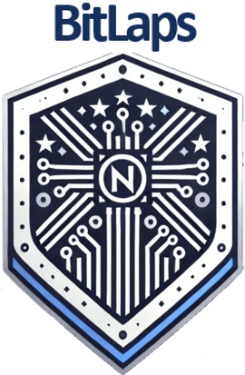

Bridging Information Technology Learning and Application through Project-based Solutions.
Welcome to BitLaps, a dynamic community of passionate IT students dedicated to transforming classroom knowledge into real-world solutions. As an innovative tech club, we thrive on solving complex challenges by applying cutting-edge technology and creative problem-solving skills. At BitLaps, we believe in learning by doing. Our members are known for their academic excellence, consistently excelling in different areas of tech. Beyond academics, we seek to collaborate on projects that address real-life problems, bridging the gap between theory and practical application. We are more than just students—we are future tech leaders, building solutions today that will shape tomorrow. Join us as we push boundaries, develop innovative solutions, and turn ideas into reality!
